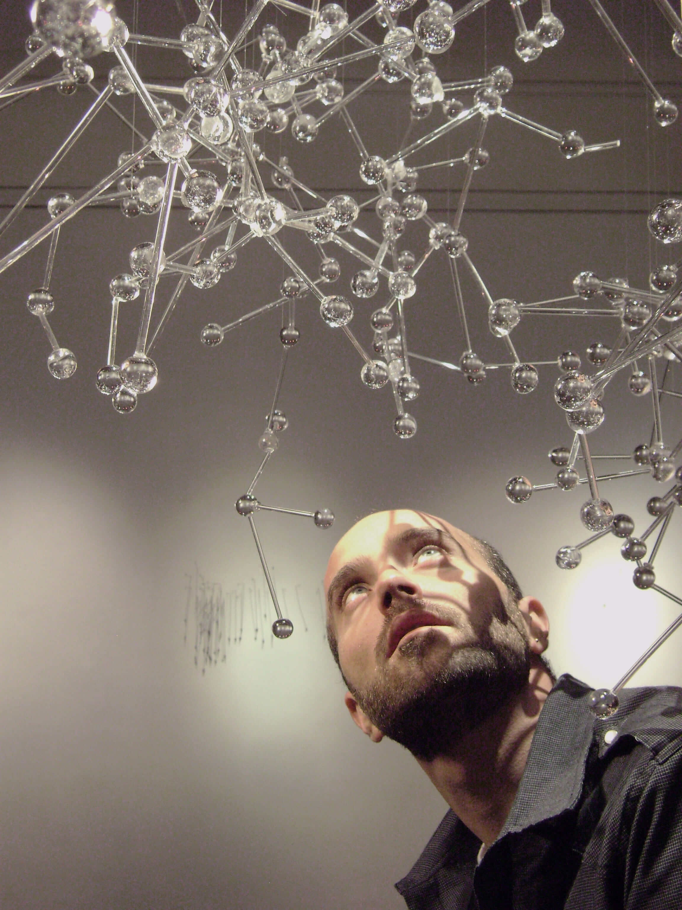

césar benzi
en español for englishbio
Benzi, C.
1981, Colonia Belgrano, Santa Fe, Argentina.
Visual artist. Bachelor of Visual Arts. Teacher.
He has participated in contests, Salons, Biennials and contests of national relevance, standing out among them the "Argentina pinta bien " Program, the Palais de Glace National Salon in the category “New Supports and Installantions”, among others. He has won awards and distinctions. He has carried out a construction clinic with Tulio de Sagastizabal, Justo Pastor Mellado, Gabriel Valansi and Lara Marmor. He has obtained scholarships from Fondo Nacional de las Artes, Fundación Nuevo Banco de Santa Fe and the Ministry of Culture of the Province of Santa Fe. He has developed work in industries and also in projects of transdisciplinary nature, articulating proposals with electroacoustic composers. He has also participated as a member of the Jury in different contests and carried out curatorial accompaniments. His work is part of the publications by the National Academy of Fine Arts, among others, and his works of art is the patrimony of prominent museums in his region.
artworks
"intangible with leak"
(installation)
work in progress text arch.marcelo olmos text arch.carlos m. reinante +photos"dry love"
(sculptures)
+photos"death sync"
(unconventional
drawings)
+photos"white"
(installation)
+photos"romance"
(unconventional
drawings)
+photos"the intangible"
(unconventional
drawings - installation)
+photos"dancing humans"
(sculptures)
+photos"the origin"
(ceramics)
+photoslinks of interest